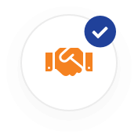
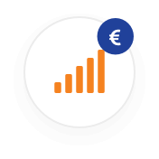
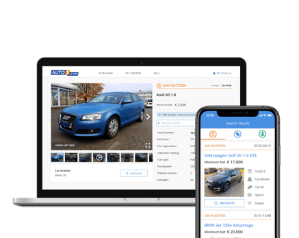
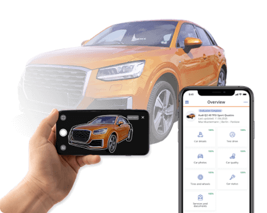

SLIMEAUTOS.com is Europe’s largest wholesale platform for used automobiles. More than 60,000 partner dealers in over 30 countries actively digitize their used car business with AUTO1.com technologies and services. Buyers have access to a cross-brand inventory of over 30,000 inspected used cars. Sellers, including dealers, manufacturers, leasing, and rental car companies, have the opportunity to market vehicles digitally to the dealer network. Our Europe-wide logistics network with more than 300 logistics partners enables fast international trading at competitive prices. All services are available to our partners 24 hours a day, seven days a week, without hidden fees, or minimum purchase or sell requirements.
Business operations in 30+ countries 60,000+ active partner dealers 555,000+ automobiles sold in 2021Diversification and risk management are essential factors in the professional trading of used cars. Operating on a local level and the lack of a broad assortment of used cars belong to the most common challenges of the used car industry. Only a diversified portfolio strategy enables high throughput and higher contribution margins. With SLIMEAUTOS.com as a reliable sourcing channel, partner dealers can actively manage their vehicle inventory, ensuring long-term competitiveness and success in the used car business. For the digital B2B acquisition, a cross-brand inventory of over 30,000 vehicles is available to all retailers at market-based purchasing conditions, which is supplemented daily by over 3,000 new additions. Registered dealers across Europe have the opportunity to purchase tested and fully documented used cars directly online from SLIMEAUTOS.com with just a few clicks or via the App - 24 hours a day, 7 days a week.
With SLIMEAUTOS.com as a reliable sourcing channel, partner dealers can actively manage their vehicle inventory, ensuring long-term competitiveness and success in the used automobile business.
Additionally, our Remarketing partners can sell automobiles B2B digitally without any risk to a network of over 60,000 dealers across Europe via SLIMEAUTOS.com Remarketing. Tailored Full-Service-Remarketing ranges from evaluation to marketing and offers dealers, leasing and rental companies, fleet operators, and manufacturers an innovative and efficient and digital remarketing solution along the value chain. Together with SLIMEAUTOS.com dealers implement data-driven used automobiles management. Especially for trade-ins, third-party brands, leasing returns, or damaged automobiles dealers need to make fast usage decisions to a stronger focus on their private customers and eventually sell more automobiles. Inappropriate automobiles can be quickly evaluated, priced, and sold Europe-wide via our website and apps with just a few clicks.
Through the simple SLIMEAUTO App, all data relevant to the evaluation process can be easily collected within 15 minutes by the seller.
SLIMEAUTOS.com offers its automobile trading professionals exclusive access to a stock of more than 30,000 inspected used automobiles, while taking care of the whole B2B transcation. This includes transport, automobile and document handling!
Working with SLIMEAUTOS.com removes any barriers of buying and selling automobiles across Europe and makes automobile trading faster, easier and 100% digital. Start now by registering for free and benefit from our digital solutions!
Europe's leading digital platform for buying and selling automobiles online.
SLIMEAUTOS.com was founded in 2013 and is part of AUTO1 Group, Europe’s leading digital platform for buying and selling used automobiles online. AUTO1 Group, headquartered in Berlin, is active in more than 30 countries and achieved revenues of 4.78 billion Euros in 2021.
For more information visit www.auto1-group.com
© SLIMEAUTOS.com